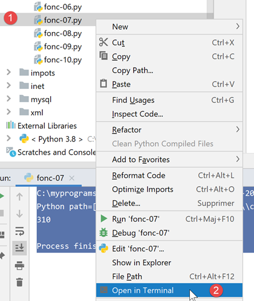

6. Les fonctions

6.1. Script [fonc_01] : portée des variables
Le script [fonc_01] montre des exemples de portée de variables entre fonctions :
# portée des variables
def f1():
# l'utilisation de variables globales est à éviter
# variable globale i
global i
i += 1
# variable locale j
j = 10
print(f"f1[i,j]=[{i},{j}]")
def f2():
# l'utilisation de variables globales est à éviter
# variable globale i
global i
i += 1
# variable locale j
j = 20
print(f"f2[i,j]=[{i},{j}]")
def f3():
# variable locale i
i = 1
# variable locale j
j = 30
print(f"f3[i,j]=[{i},{j}]")
# programme principal
i = 0
j = 0
# ces deux variables ne seront connues d'une fonction f
# que si celle-ci déclare explicitement par l'instruction global qu'elle veut les utiliser
# ou que la fonction n’utilise la variable globale qu’en lecture
f1()
f2()
f3()
# j n'a pas changé mais i a changé
print(f"[i,j]=[{i},{j}]")
Résultats
C:\Data\st-2020\dev\python\cours-2020\python3-flask-2020\venv\Scripts\python.exe C:/Data/st-2020/dev/python/cours-2020/python3-flask-2020/fonctions/fonc_01.py
f1[i,j]=[1,10]
f2[i,j]=[2,20]
f3[i,j]=[1,30]
[i,j]=[2,0]
Process finished with exit code 0
Notes :
- le script montre l'utilisation de la variable i, déclarée globale dans les fonctions f1 et f2. Dans ce cas, le programme principal et les fonctions f1 et f2 partagent la même variable i.
6.2. Script [fonc_02] : portée des variables
Le script [fonc_03] reprend le script [fonc_02] et montre comment éviter l'usage de variables globales :
# portée des variables
def f1(i):
# variable locale i
i += 1
# variable locale j
j = 10
print(f"f1[i,j]=[{i},{j}]")
# on rend la valeur modifiée
return i
def f2(i):
# variable locale i
i += 1
# variable locale j
j = 20
print(f"f2[i,j]=[{i},{j}]")
# on rend la valeur modifiée
return i
def f3():
# variable locale i
i = 1
# variable locale j
j = 30
print(f"f3[i,j]=[{i},{j}]")
# programme principal
i = 0
j = 0
# ces deux variables ne seront connues d'une fonction f
# que si celle-ci déclare explicitement par l'instruction global qu'elle veut les utiliser
# ou si la fonction n’utilise la variable globale qu’en lecture
i = f1(i)
i = f2(i)
f3()
# j n'a pas changé mais i a changé
print(f"[i,j]=[{i},{j}]")
Commentaires :
- lignes 2, 12 : au lieu d'être déclarée globale, la variable [i] est passée en paramètre aux fonctions f1 et f2 ;
- lignes 9, 19 : les fonctions f1 et f2 rendent la variable [i] modifiée au programme principal. Celui-ci la récupère aux lignes 36 et 37 ;
Résultats
C:\Data\st-2020\dev\python\cours-2020\python3-flask-2020\venv\Scripts\python.exe C:/Data/st-2020/dev/python/cours-2020/python3-flask-2020/fonctions/fonc_02.py
f1[i,j]=[1,10]
f2[i,j]=[2,20]
f3[i,j]=[1,30]
[i,j]=[2,0]
Process finished with exit code 0
6.3. Script [fonc_03] : portée des variables
Le script [fonc_03] montre une particularité des variables utilisées à la fois dans une fonction et dans le code appelant celle-ci, selon que dans la fonction cette variable est utilisée uniquement en lecture ou non.
def f1():
# ici la variable globale i est connue
print(f"[f1] i={i}")
# ici la variable globale j est connue
print(f"[f1] j={j}")
def f2():
# ici la variable globale i n'est pas connue
# car la fonction f2 définit une variable locale de même nom
# c'est alors elle qui a priorité
try:
# essai d'affichage de la variable locale i définie plus loin
print(f"[f2] i={i}")
# l'instruction qui suit fait de i une variable locale de la fonction f2
i = 7
except BaseException as erreur:
print(f"[f2] erreur={erreur}")
def f3():
# ici la variable globale i n'est pas connue
# car la fonction f3 définit une variable locale de même nom
# c'est alors elle qui a priorité
# l'instruction qui suit fait de i une variable locale
i = 7
# affichage - ici i est connue
print(f"[f3] i={i}")
# main -----------
# variables globales aux fonctions
i = 10
j = 20
# appel de f1
f1()
print(f"[main] i={i}, j={j}")
# appel de f2
f2()
print(f"[main] i={i}")
# appel de f3
f3()
print(f"[main] i={i}")
Notes
- ligne 34 : le code principal définit une variable [i] ;
- lignes 1-5 : la fonction f1 utilise également une variable [i] sans lui donner de valeur. C'est une lecture de la variable [i]. Dans ce cas, la variable [i] utilisée est celle du code appelant, ligne 34 ;
- lignes 8-18 : la fonction f2 utilise également une variable [i] mais lui donne une valeur ligne 16. Le fait de donner une valeur à la variable [i] dans f2 fait automatiquement de [i] une variable locale à la fonction [f2]. Celle-ci 'cache' donc la variable [i] du code appelant ;
- ligne 14 : l'opération d'écriture de la variable locale [i] va échouer car celle-ci n'a pas de valeur lorsqu'on arrive à la ligne 14. Elle obtient sa valeur ligne 16. Il va se produire une exception. Pour cette raison, on a inséré la ligne 14 dans un try / catch ;
- lignes 21-29 : la fonction f3 fait la même chose que la fonction f2 mais définit plus tôt sa variable locale [i] ;
Résultats
C:\Data\st-2020\dev\python\cours-2020\python3-flask-2020\venv\Scripts\python.exe C:/Data/st-2020/dev/python/cours-2020/python3-flask-2020/fonctions/fonc_03.py
[f1] i=10
[f1] j=20
[main] i=10, j=20
[f2] erreur=local variable 'i' referenced before assignment
[main] i=10
[f3] i=7
[main] i=10
Process finished with exit code 0
6.4. Script [fonc_04] : mode de passage des paramètres
Le script est le suivant :
# fonction f1
def f1(a):
a = 2
# fonction f2
def f2(a, b):
a = 2
b = 3
return a, b
# ------------------------ main
x = 1
f1(x)
print(f"x={x}")
(x, y) = (-1, -1)
(x, y) = f2(x, y)
print(f"x={x}, y={y}")
Résultats
Notes :
- tout est objet en Python. Certains objets sont dits "immutable" (en anglais) : on ne peut pas les modifier. C'est le cas des nombres, des chaînes de caractères, des tuples. Lorsque des objets Python sont passés en paramètres à des fonctions, ce sont leur références qui sont passées sauf si ces objets sont "immutable" auquel cas, c'est la valeur de l'objet qui est passée ;
- les fonctions f1 (ligne 2), et f2 (ligne 7) veulent illustrer le passage d'un paramètre de sortie. On veut que le paramètre effectif d'une fonction soit modifié par la fonction ;
- lignes 2-3 : la fonction f1 modifie son paramètre formel a. On veut savoir si le paramètre effectif va lui aussi être modifié ;
- lignes 14-15 : le paramètre effectif est x=1. La ligne 2 des résultats, montre que le paramètre effectif n'est pas modifié. Ainsi le paramètre effectif x et le paramètre formel a sont deux objets différents ;
- lignes 8-10 : la fonction f2 modifie ses paramètres formels a et b, et les rend comme résultats ;
- lignes 17-18 : on passe à f2 les paramètres effectifs (x,y) et le résultat de f2 est remis dans (x,y). La ligne 3 des résultats montre que les paramètres effectifs (x,y) ont été modifiés.
On en conclut que lorsqu'on des objets "immutable" sont des paramètres de sortie, il faut qu'ils fassent partie des résultats renvoyés par la fonction.
6.5. Script [fonc_05] : ordre d'écriture des fonctions dans un script
Le script [fonc_05] montre qu'on ne peut appeler une fonction si elle n'a pas été précédemment rencontrée dans le code :
# ------------------------ main
print(f2(100, 200))
# fonction f1
def f1(a):
return a + 10
# fonction f2
def f2(a, b):
return f1(a + b)
Notes
- la ligne 2 va provoquer une erreur parce qu'elle utilise la fonction f2 qui n'a pas encore été définie dans le script ;
Résultats
6.6. Script [fonc_06] : ordre d'écriture des fonctions dans un script
Le script [fonc_06] montre que ce qui vaut pour le code appelant ne vaut pas pour les fonctions :
# fonction f2
def f2(a, b):
return f1(a + b)
# fonction f1
def f1(a):
return a + 10
# ------------------------ main
print(f2(100, 200))
Notes
- ligne 3 : la fonction [f2] utilise la fonction [f1] définie plus loin dans le script. Cela ne provoque cependant pas d'erreur. On peut donc en conclure que l'ordre de définition des fonctions dans un script Python n'a pas d'importance ;
Résultats
6.7. Script [fonc_07] : utilisation de modules
Le script [fonc_07] montre comment isoler les fonctions dans un module.

Nous isolons dans un module des fonctions réutilisables. Plutôt que de les transporter d'un script à l'autre :
- on les place dans un fichier à part que l'on déclare d'une façon particulière ;
- les scripts ayant besoin de ces fonctions 'importe' le module qui les contient ;
Le script [fonctions_module_01] est le suivant :
# fonction f2
def f2(a, b):
return f1(a + b)
# fonction f1
def f1(a):
return a + 10
Pour que les fonctions du script [fonctions_module_01] puissent être référencées par d'autres scripts, il y a différentes façons de faire. Elles diffèrent selon qu'on exécute ou non le script à l'intérieur de [PyCharm].
Sous [PyCharm] les modules importés sont cherchés dans des dossiers précis appelés [Sources Root]. Il y a deux façons de faire d'un dossier un [Sources Root] :

- en [4], le dossier a changé de couleur ;
Après cette opération, le dossier [fonctions/modules] est reconnu comme un dossier source. On peut alors écrire dans un script :
Pour importer / utiliser la fonction f2 définie dans le module [fonctions_module_01.py].
 |
Une autre méthode est de passer par les propriétés du projet :
- ci-dessus, la séquence [1-6] permet de faire du dossier [shared] un dossier où ranger des modules à importer ;
Nous n'allons pour l’instant déclarer aucun dossier comme [Sources Root] à part la racine du projet :

Ceci fait, on peut écrire le script [fonc-07] suivant :
# utilisation de modules
import sys
# ------------------------ main
print(f"Python path={sys.path}")
from fonctions.shared.fonctions_module_01 import f2
print(f2(100, 200))
- ligne 2 : on importe l'objet [sys] pour pouvoir utiliser ligne 5, son attribut [path] qui donne, ce qu'on appelle le [Python Path] : une liste de dossiers qui seront explorés à la recherche de modules importés ;
- ligne 6 : on importe la fonction f2 du module [fonctions_module_01]. Pour désigner ce module, on utilise le chemin qui mène de la racine du projet au module. Avec Pycharm, la racine du projet fait toujours partie des dossiers explorés lorsqu'est cherché un module importé dans un script. Ce dossier fait donc partie du [Python Path] du projet. C'est ce que la ligne 5 va nous permettre de vérifier ;
- ligne 6 : si on décrivait le chemin qui mène de la racine du projet au dossier [fonctions_module_01] on écrirait [fonctions/shared/fonctions_module_01]. Dans le chemin d'un module, le signe / est remplacé par le point. On écrit donc [fonctions.modules.fonctions_module_01] ;
- après la ligne 6, la fonction f2 est connue. On l'utilise ligne 8 ;
Résultats
C:\Data\st-2020\dev\python\cours-2020\python3-flask-2020\venv\Scripts\python.exe C:/Data/st-2020/dev/python/cours-2020/python3-flask-2020/fonctions/fonc_07.py
Python path=['C:\\Data\\st-2020\\dev\\python\\cours-2020\\python3-flask-2020\\fonctions', 'C:\\Data\\st-2020\\dev\\python\\cours-2020\\python3-flask-2020', 'C:\\Data\\st-2020\\dev\\python\\cours-2020\\python3-flask-2020\\fonctions\\shared', 'C:\\myprograms\\Python38\\python38.zip', 'C:\\myprograms\\Python38\\DLLs', 'C:\\myprograms\\Python38\\lib', 'C:\\myprograms\\Python38', 'C:\\Data\\st-2020\\dev\\python\\cours-2020\\python3-flask-2020\\venv', 'C:\\Data\\st-2020\\dev\\python\\cours-2020\\python3-flask-2020\\venv\\lib\\site-packages']
310
Process finished with exit code 0
Ci-dessus :
- surlignée en vert, on voit que la racine du projet fait partie du [Python Path] ;
- surligné en jaune, on voit que le dossier du script exécuté fait également partie du [Python Path] ;
- les autres éléments du [Python Path] proviennent directement du dossier d'installation de Python ;
Que se passe-t-il lorsqu'on n'utilise pas PyCharm pour exécuter [fonc-07] ?


- en [1], on exécute le script [fonc-07]. On est positionnés dans le dossier [fonctions] ;
- en [2], on voit que le dossier d'exécution fait partie du [Python Path]. C'est toujours ainsi. On peut voir également que le dossier racine [C:\\Data\\st-2020\\dev\\python\\cours-2020\\python3-flask-2020] ne fait pas partie du [Python Path] ;
- en [3], l'interpréteur Python déclare qu'il ne trouve pas le module [fonctions] ;
Pour chercher le module importé [fonctions.shared.fonctions_module_01], l'interpréteur Python cherche dans les dossiers du [Python Path] un sous-dossier nommé [fonctions]. Il ne le trouve nulle part. En effet le sous-dossier [fonctions] est sous le dossier [C:\Data\st-2020\dev\python\cours-2020\python3-flask-2020] qui ne fait pas partie du [Python Path].
Le script [fonc-08] donne une solution possible à ce problème.
6.8. Script [fonc_08] : ajouter des dossiers au [Python Path]
Il est possible de modifier le [Python Path] par programmation comme le montre le script [fonc-08] :
# utilisation de modules
import os
import sys
# dossier du script
script_dir = os.path.dirname(os.path.abspath(__file__))
# Python Path avant modification
print(f"Python path avant={sys.path}")
# on ajoute le dossier [shared] au Python Path
sys.path.append(f"{script_dir}/shared")
# Python Path après modification
print(f"Python path après={sys.path}")
# import f2
from fonctions_module_01 import f2
# ------------------------ main
print(f2(100, 200))
Notes
- ligne 4 : la variable spéciale [__file__] est le nom du script qui s’exécute. Selon le contexte d’exécution, ce nom peut être absolu (Pycharm) ou relatif (console). La fonction [os.path.abspath] donne le nom absolu du fichier dont on lui passe le nom. La fonction [os.path.dirname] donne le nom absolu du dossier contenant le fichier dont on lui passe le nom ;
- ligne 10 : [sys.path] est un tableau contenant les noms des dossiers à explorer lorsqu'un module est recherché. On ajoute à ce tableau la racine du projet définie ligne 4 ;
- on affiche le [Python Path] avant (ligne 8) et après (ligne 12) modification ;
- ligne 15 : on importe le module [fonctions_module_01] qui contient la fonction f2 ;
L'exécution dans PyCharm donne les résultats suivants :
C:\Data\st-2020\dev\python\cours-2020\python3-flask-2020\venv\Scripts\python.exe C:/Data/st-2020/dev/python/cours-2020/python3-flask-2020/fonctions/fonc_08.py
Python path avant=['C:\\Data\\st-2020\\dev\\python\\cours-2020\\python3-flask-2020\\fonctions', 'C:\\Data\\st-2020\\dev\\python\\cours-2020\\python3-flask-2020', 'C:\\Data\\st-2020\\dev\\python\\cours-2020\\python3-flask-2020\\fonctions\\shared', 'C:\\myprograms\\Python38\\python38.zip', 'C:\\myprograms\\Python38\\DLLs', 'C:\\myprograms\\Python38\\lib', 'C:\\myprograms\\Python38', 'C:\\Data\\st-2020\\dev\\python\\cours-2020\\python3-flask-2020\\venv', 'C:\\Data\\st-2020\\dev\\python\\cours-2020\\python3-flask-2020\\venv\\lib\\site-packages']
Python path après=['C:\\Data\\st-2020\\dev\\python\\cours-2020\\python3-flask-2020\\fonctions', 'C:\\Data\\st-2020\\dev\\python\\cours-2020\\python3-flask-2020', 'C:\\Data\\st-2020\\dev\\python\\cours-2020\\python3-flask-2020\\fonctions\\shared', 'C:\\myprograms\\Python38\\python38.zip', 'C:\\myprograms\\Python38\\DLLs', 'C:\\myprograms\\Python38\\lib', 'C:\\myprograms\\Python38', 'C:\\Data\\st-2020\\dev\\python\\cours-2020\\python3-flask-2020\\venv', 'C:\\Data\\st-2020\\dev\\python\\cours-2020\\python3-flask-2020\\venv\\lib\\site-packages', 'C:\\Data\\st-2020\\dev\\python\\cours-2020\\python3-flask-2020\\fonctions/shared']
310
Process finished with exit code 0
- ligne 3 : on voit que le dossier [shared] est présent deux fois dans le [Python Path]. On peut éviter cela mais ici ça ne gêne pas ;
- ligne 4 : la fonction f2 a bien été exécutée ;
Maintenant exécutons [fonc-08] dans un terminal :
(venv) C:\Data\st-2020\dev\python\cours-2020\python3-flask-2020\fonctions>python fonc_08.py
Python path avant=['C:\\Data\\st-2020\\dev\\python\\cours-2020\\python3-flask-2020\\fonctions', 'C:\\myprograms\\Python38\\python38.zip', 'C:\\myprograms\\Python38\\DLLs', 'C:\\myprograms\\Python38\\lib', 'C:\\myprograms\\Python38', 'C:\\Data\\st-2020\\dev\\python\\cours-2020\\python3-flask-2020\\venv', 'C:\\Data\\st-2020\\dev\\python\\cours-2020\\python3-flask-2020\\venv\\lib\\site-packages']
Python path après=['C:\\Data\\st-2020\\dev\\python\\cours-2020\\python3-flask-2020\\fonctions', 'C:\\myprograms\\Python38\\python38.zip', 'C:\\myprograms\\Python38\\DLLs', 'C:\\myprograms\\Python38\\lib', 'C:\\myprograms\\Python38', 'C:\\Data\\st-2020\\dev\\python\\cours-2020\\python3-flask-2020\\venv', 'C:\\Data\\st-2020\\dev\\python\\cours-2020\\python3-flask-2020\\venv\\lib\\site-packages', 'C:\\Data\\st-2020\\dev\\python\\cours-2020\\python3-flask-2020\\fonctions/shared']
310
- ligne 2 : comme précédemment, le dossier [shared] n'est pas dans le [Python Path] ;
- ligne 3 : maintenant il y est ;
- ligne 4 : la fonction f2 a été trouvée ;
6.9. Script [fonc_09] : déclaration du type des paramètres
Le script [fonc_09] montre qu'on peut déclarer le type des paramètres d'une fonction ainsi que celui du résultat. Cependant cette déclaration n'est utile que pour la documentation de la fonction. L'interpréteur Python ne vérifie pas que les paramètres effectifs de la fonction ont bien le type attendu. Cependant, Pycharm signale les incohérences de types entre paramètres effectifs et formels. Cette seule raison suffit pour rendre les déclarations de type indispensables.
Le script est le suivant :
# une fonction avec indication du type des paramètres
# cela sert de documentation uniquement car l'interpréteur python n'en tient pas compte
def show(param: int) -> int:
print(f"param={param}, type(param)={type(param)}")
return param + 1
# main -------------------------
print(show(4))
show("xyz")
Notes :
- ligne 5 : on déclare que le paramètre formel [param] est de type [int] et que le résultat de la fonction est également de type [int] ;
- ligne 11 : le paramètre effectif de la fonction [show] a le bon type ;
- ligne 12 : le paramètre effectif de la fonction [show] n'a pas le bon type ;
Résultats
- ligne 10 : le type du paramètre [param] est de type [str]. Lorsque ce message s'affiche, on est déjà entrés dans le code de la fonction [show]. L'interpréteur Python a donc accepté que le paramètre effectif da la fonction [show] soit de type [str] ;
- la ligne 7 du code provoque l'exception reflétée par les lignes 4-10 des résultats ;
PyCharm indique néanmoins qu’il y a une anomalie :

En [1], PyCharm a surligné l’appel erroné.
6.10. Script [fonc_10] : paramètres nommés
Pour passer des paramètres à une fonction, on peut utiliser les noms des paramètres formels de celle-ci. Dans ce cas, on n'est pas obligés de respecter l'ordre des paramètres formels :
# on peut désigner les paramètres effectifs par leurs noms formels
def f(x, y):
return x + y
# main
print(f(y=10, x=3))
Notes
- ligne 2 : la fonction f a deux paramètres formels x et y ;
- ligne 7 : lors de l'appel à la fonction f, on peut utiliser les noms des paramètres formels. Cette pratique peut être utile au moins dans deux cas :
- la fonction a beaucoup de paramètres dont la plupart ont une valeur par défaut. Lors de l'appel, la technique précédente permet d'initialiser les seuls paramètres dont on ne veut pas utiliser la valeur par défaut ;
- si les paramètres formels ont un nom significatif, alors l'utilisation de paramètres nommés dans l'appel de la fonction améliore la lisibilité du code ;
Résultats
6.11. Script [fonc_11] : fonction récursive
Le script [fonc_11] est un exemple de fonction récursive (qui s’appelle elle-même) :
# fonction récursive
def fact(i: int) -> int:
# factorielle(1) est 1
# une fonction récursive doit se terminer à un certain moment
if i == 1:
return 1
else:
# factorielle(i)=i*factorielle(i-1)
return i * fact(i - 1)
# ---------- main
print(f"fact(8)={fact(8)}")
Commentaires
- lignes 1-9 : la fonction factorielle ;
- ligne 9 : la fonction [factorielle] s’appelle elle-même ;
- lignes 5-6 : une fonction récursive doit toujours s’arrêter lorsqu’une condition est réalisée sinon on a une récursion infinie ;
Résultats
6.12. Script [fonc_12] : fonction récursive
La fonction [fonc_12] donne davantage de détails sur le fonctionnement de la récursivité :
# fonction récursive
# comportement du paramètre j
def fact(i: int, j: int) -> int:
# arrêt de la fonction récursive
if i == 1:
print(f"j={j}")
return 1
else:
# on manipule j
j += 1
print(f"avant fact j={j}")
# récursivité
f = fact(i - 1, j)
print(f"après fact j={j}")
# résultat
return i * f
# ---------- main
print(f"fact(8)={fact(8, 0)}")
Commentaires
- ligne 5 : on s’intéresse toujours à la fonction factorielle. On lui ajoute le paramètre [j] ;
- ligne 12 : la variable j est régulièrement incrémentée à chaque factorielle. On affiche sa valeur avant (ligne 12) et après (ligne 16) la récursivité (ligne 15) ;
Résultats
- lignes 2-8 : on voit que la valeur de [j] croît tant que la récursivité continue jusqu’à rencontrer la condition où la récursivité s’arrête. A partir de ce moment, le retour des appels à la fonction [fact] s’opère en sens inverse des appels ;
- lignes 10-16 : ces affichages traduisent les retours successifs de l’appel de la factorielle. La variable [j] retrouve ses valeurs jusqu’à sa valeur initiale 1 ;